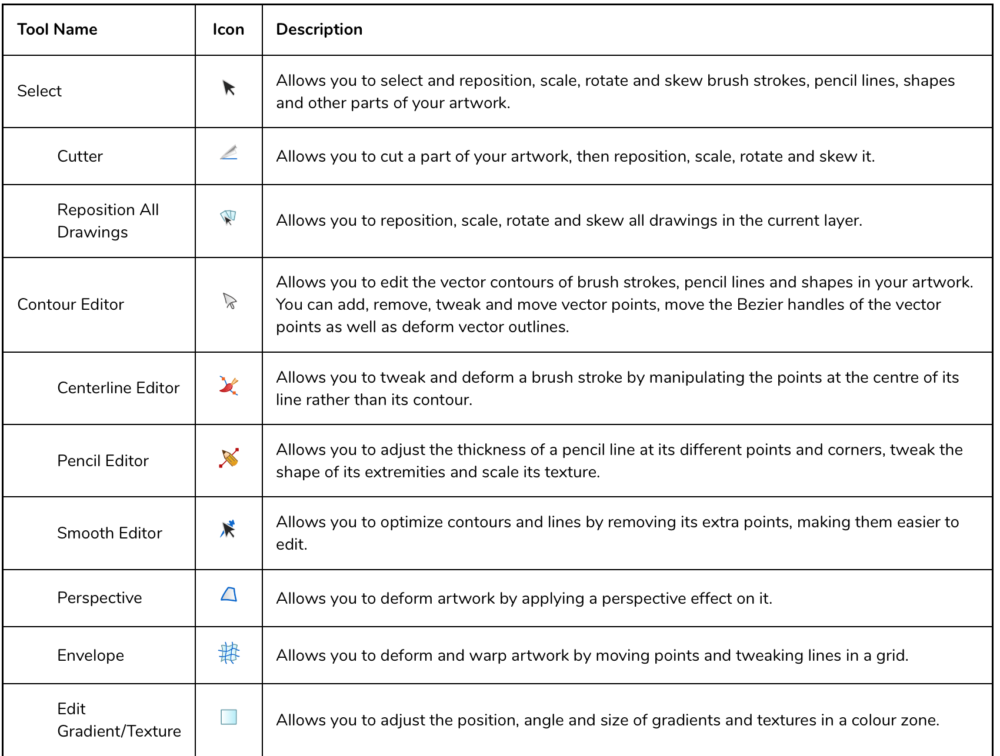

Lesson - 5 - Drawing Tools
About this Lesson:
You will continue to learn more about drawing tools and experiment with different bitmap and vector drawing tools in Toon Boom Harmony. There is an interactive presentation on how to use different drawing tools at the bottom of this lesson. Continue to take notes as you complete this lesson in Harmony.
Lesson Duration: 5 hours
Topics:
- Stabilizer: You can enable and configure pen stabilization using the Pen Settings toolbar. You may have to do some trial and error to find the settings that work for you and to get used to drawing with the stabilizer.
- Tool Presets: Tool presets let you save a variety of settings and are very efficient for accessing the tools you use most often. That way, the tool is already set with the desired properties, such as colour, line thickness, whether to enable Draw Behind or Auto Flatten mode, and so on. You can create presets for these tools and many more: Brush, Pencil, Eraser, Rectangle, Ellipse, and Line. The difference between a tool preset and a brush preset is that when you save a tool preset, you have the option of saving the colour and assigning a shortcut, which you cannot do with brush presets.
- Gradients: When drawing on a vector layer, each stroke is its own vector drawing object, and can be manipulated independently at any time unless you flatten or group your strokes together. When drawing on a bitmap layer, most modifications are immediately merged into the artwork, making it a single bitmap drawing that can only be drawn on, painted on or erased. One exception to this rule is when you paint a zone with a gradient or texture.
- Gradient Transform: Allows you to adjust the position, angle and size of gradients and textures in a colour zone.
- Alpha: Adjust the transparency with the Alpha slider or type the value directly in the Alpha field
- Keyframes: Interpolation is the computer-generated motion between two keyframes. Some animators and compositors like to create their own in-betweens, while others like to have the computer do it. Harmony has stop-motion (no interpolation) and motion keyframes (computer-generated interpolation).
With stop-motion keyframes, there is no computer-generated motion between the stop-motion keyframe and the next keyframe. The segment of the function between those keyframes is flat, and the drawing remains still until the playback reaches the next keyframe, then the drawing pops to its new location. - Transform Tool: Using the Transform tool, you can easily reposition, scale, rotate and even skew layers directly in the Camera view. When positioning a drawing layer using the Transform tool, always make sure the Peg Selection Mode is deselected in the Tool Properties view. Otherwise, it will limit the selection to pegs in the Camera view.
- Tools Toolbar: The Tools toolbar contains the main tools you need to work in Harmony. In the default workspace, this toolbar is located on the left edge of the application window.

Task:
- Download the Zipped Drawing Tools Harmony Work Folder in the Lesson Files (on the right).
- Unzip this into your Documents folder on your computer.
- Launch Toon Boom Harmony, and open DrawingTools.xstage
- Complete the Drawing Tools 101 Interactive Lesson at the bottom of the lesson. Take notes on the Drawing Tools, this will help you prepare for your certification exam at the end of this course.
- You will need to export your work as a Quicktime Movie.
- Submit Drawing_Tools.mov.
[slideshow]
[quiz]